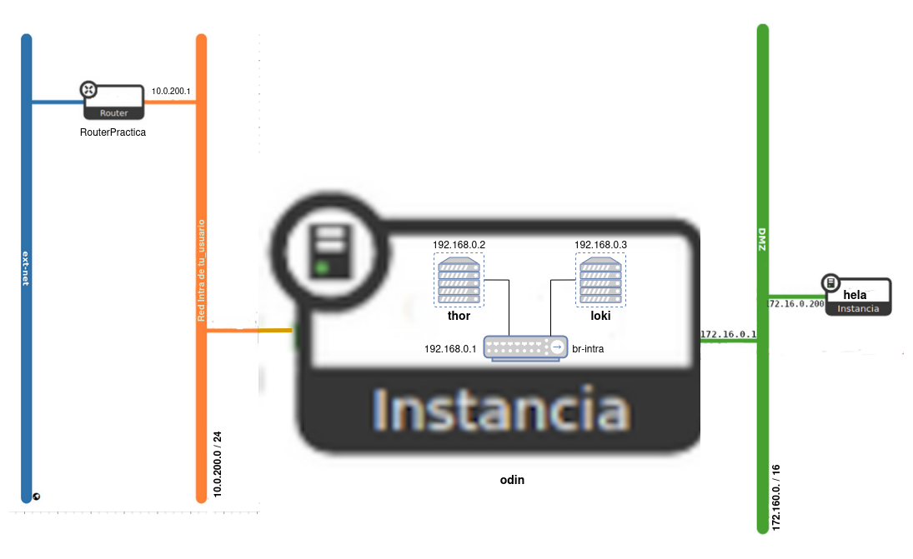

Práctica OpenStack
En esta ocasión vamos a ver como configurar un escenario de OpenStack el cual vamos a usar durante todo el curso. Este escenario está compuesto de 4 máquinas: 2 instancias en OpenStack y dos contenedores LXC que se ejecutará en una de las instancias.
El dominio será un subdominio de fabio.gonzalonazareno.org. Finalmente tendremos:
- Máquina 1: Instancia en OpenStack con Debian 12 Bookworm que se llama
odin.fabio.gonzalonazareno.org. - Máquina 2: Instancia en OpenStack con Rocky Linux 9 que se llama
hela.fabio.gonzalonazareno.org. - Máquina 3: Contenedor LXC con Ubuntu 22.04 que se llama
thor.fabio.gonzalonazareno.org. - Máquina 4: Contenedor LXC con Ubuntu 22.04 que se llama
loki.fabio.gonzalonazareno.org.
Escenario

Creación de las máquinas en OpenStack
1. Crea un nuevo router llamado RouterPractica conectado a la red externa.
openstack router create routerpractica
openstack router set routerpractica --external-gateway ext-net
2. Crea una red interna que se llame Red Intra de tu_usuario, con las siguientes características:
- Está conectada al router que has creado en el punto anterior.
- Direccionamiento: 10.0.200.0/24
- Con DHCP y DNS (
172.22.0.1). - La puerta de enlace de los dispositivos conectados a esta red será el
10.0.200.1.
openstack network create "Red intra de fabio.gonzalez"
openstack subnet create --network "Red intra de fabio.gonzalez" --subnet-range 10.0.200.0/24 --dns-nameserver 172.22.0.1 --dhcp 172.22.0.1
Para especificar mi subred he usado el ID, ya que esta no tiene nombre
openstack router add subnet routerpractica ac1ee726-ddfd-464d-a7b4-e24a69149042
3. Crea una red interna que se llame Red DMZ de tu_usuario, con las siguientes características:
- Direccionamiento: 172.16.0.0/16
- Con DHCP y DNS (
172.22.0.1). - La puerta de enlace de los dispositivos conectados a esta red será el
172.16.0.1.
openstack network create "Red DMZ de fabio.gonzalez"
openstack subnet create --network "Red DMZ de fabio.gonzalez" --subnet-range 172.16.0.0/16 --dns-nameserver 172.22.0.1 --dhcp 172.22.0.1
4. Las dos instancias que vamos a crear se van a configurar con cloud-init de la siguiente manera:
- Deben actualizar los paquetes de la distribución de la instancia.
- El dominio utilizado será del tipo
tunombre.gonzalonazareno.org. Por lo tanto en la configuración concloud-inithabrá que indicar el hostname y el FQDN. - Se crearán dos usuarios:
- Un usuario sin privilegios. Se puede llamar como quieras (pero el nombre será el mismo en todas las máquinas) y accederás a las máquinas usando tu clave ssh privada.
- Un usuario
profesor, que puede utilizarsudosin contraseña. Copia de las claves públicas de todos los profesores en las instancias para que puedan acceder con el usuarioprofesor. - Cambia la contraseña al usuario
root.
5. Creación de la máquina1 (odin):
- Crea una instancia sobre un volumen de 15Gb, usando una imagen de Debian 12 Bookworm. Elige el sabor
vol.medium. Y configuralá concloud-initcomo se ha indicado anteriormente.
openstack volume create --bootable --size 15 --image "Debian 12 Bookworm" odin
openstack server create --flavor vol.medium \
--volume odin \
--security-group default \
--key-name "Fabio Gonzalez del Valle" \
--network "Red intra de fabio.gonzalez" \
--user-data cloud-config.yaml \
odin
- Está instancia estará conectada a la red Red Intra de tu_usuario. Asigna a la instancia una IP flotante.
openstack floating ip create ext-net
openstack server add floating ip odin 172.22.201.66
6. Configuración de la máquina1 (odin):
- Conecta la instancia a tu Red DMZ, asígnale la dirección
172.16.0.1para que sea la puerta de enlace las máquinas conectadas a esta red (recuerda que deberás configurar la red de la instancia para que tome dicha configuración).
openstack server add network odin "Red DMZ de fabio.gonzalez"
openstack port create --network "Red DMZ de fabio.gonzalez" --fixed-ip ip-address=172.16.0.1 puerto-odin
openstack server add port odin puerto-odin
- Deshabilita la seguridad de los puertos en las dos interfaces de red para que funcione de manera adecuada el NAT.
openstack server remove security group odin default
openstack port set --disable-port-security puerto-odin
openstack port set --disable-port-security f01ff47d-90d0-49eb-9581-535ae67f69be
- Configura de forma permanente la regla SNAT para que las máquinas de la Red DMZ tengan acceso a internet.
sudo iptables -t nat -A POSTROUTING -s 172.16.0.0/16 -o ens3 -j MASQUERADE
Para hacer las reglas permanentes podemos meterlas en el fichero interfaces, pero en este caso no contamos con el, así que lo que haremos será descargar el paquete iptables-persistent. Si hemos creado la regla antes de la instalación del paquete, esta regla será guardada automáticamente.
7. Creación de la máquina2 (hela):
- Está instancia se conectará a la Red DMZ. Usando un puerto asigna a esta máquina la dirección
172.16.0.200.
openstack port create --network "Red DMZ de fabio.gonzalez" --fixed-ip ip-address=172.16.0.200 hela
- Crea una instancia sobre un volumen de 15Gb, usando una imagen de Rocky Linux 9. Elige el sabor
vol.normal. Y configúrala concloud-initcomo se ha indicado anteriormente.
openstack volume create --bootable --size 15 --image "Rocky Linux 9" hela
openstack server create --flavor vol.normal \
--volume hela \
--security-group default \
--key-name "Fabio Gonzalez del Valle" \
--network "Red DMZ de fabio.gonzalez" \
--port hela \
--user-data cloud-config-hela.yaml \
hela
- Deshabilita la seguridad de los puertos en la interfaz de red para que funcione de manera adecuada el NAT.
openstack server remove security group hela default
openstack port set --disable-port-security hela
- Comprueba que tiene acceso a internet. Si no tiene acceso a internet, no se han actualizado los paquetes con cloud-init, hazlo posteriormente..
En este punto de la práctica, mi topología de red se encuentra de la siguiente manera:

Instalación de los contenedores
En maquina1 vamos a crear dos contenedores en un red interna, para ello:
- Crea en máquina1 (odin) un linux bridge llamado
br-intra(no lo hagas convirshya que se configura una reglas de cortafuego muy estrictas) y asigna una dirección IP estática192.168.0.1. Esta será la IP de máquina1 (odin) conectada a este switch virtual y será la puerta de enlace de los contenedores. Tienes que tener en cuenta que la imagen de Debian 12 Bookworm de OpenStack tiene netplan para la configuración de las redes, por lo tanto tienes que configurar el bridge usando el fichero de configuración de netplan, para ello te puede ser útil esta página. No olvides poner la mtu a 1450 al crear el bridge. - Instala LXC y crea dos contenedores con la distribución Ubuntu 22.04. Estos contenedores serán la máquina3 (thor) y la máquina4 (loki).
- Configura de forma permanente la regla SNAT para que los contenedores tengan acceso a internet.
- Conecta los contenedores al bridge
br-intray configúralo de forma estática con las siguientes direcciones: máquina3 (thor) la192.168.0.2y máquina4 (loki) la192.168.0.3. Su DNS será el172.22.0.1. - Para que la red de OpenStack funcione de forma adecuada las imágenes que usamos tienen configurado la mtu (Unidad máxima de transferencia) a 1450 bytes. Tenemos que adecuar los contenedores a este tamaño de
trama. Para ello introduce en la configuración de los contenedores la
línea:
lxc.net.0.mtu = 1450. - Configura los contenedores para que se auto inicien al reiniciar la instancia.
- Los contenedores tendrán características parecidas a las instancias anteriormente:
- Debes actualizar los paquetes de la distribución instalada.
- El dominio utilizado será del tipo
tunombre.gonzalonazareno.org. Por lo tanto configura de manera adecuada el hostname y el FQDN. - Para acceder a los contenedores vamos a usar ssh.
- Crea dos usuarios:
- Un usuario sin privilegios. Se puede llamar como quieras (el nombre de usuario que usaste en las instancias) y accederás a los contenedores usando tu clave ssh privada.
- Un usuario
profesor, que puede utilizarsudosin contraseña. Copia de las claves públicas de todos los profesores en los contenedores para que puedan acceder con el usuarioprofesor.
- Cambia la contraseña al usuario
root.